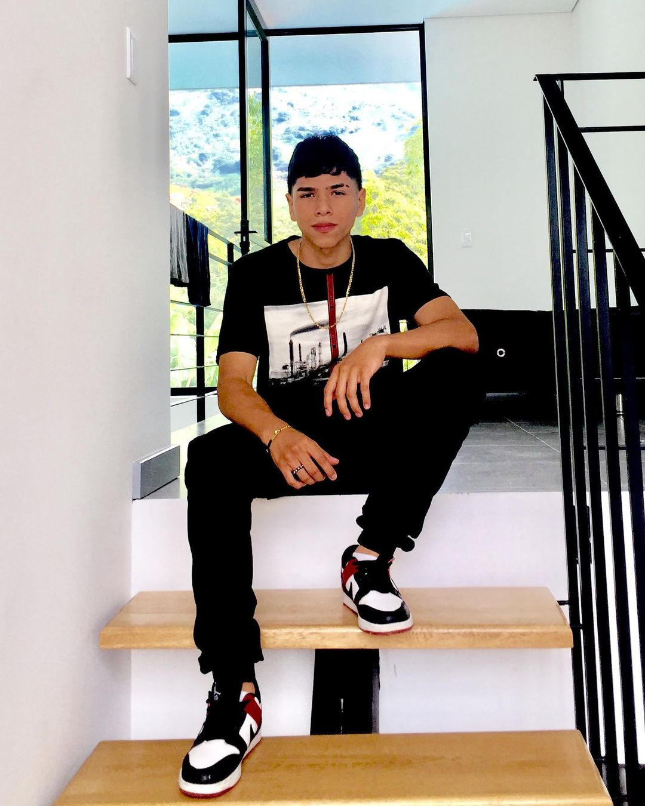

Soy un joven de nacionalidad colombiana, disciplinado, perseverante, inteligente y muy enfocado en mis metas. A pesar de mi corta edad (16 años) cuento con la suficiente experiencia y madurez para valerme por mi mismo en bastantes aspectos de la vida
Educación media - Título de bachiller
Ninguna
Conocí todo este mundo de la programación ya que algunos familiares se dedican a esto, este año decidí iniciar la carrera por aprender algo nuevo y me terminó apasionando, además de que lo veo como una buena oportunidad laboral. Por otro lado mis expectativas al terminar la carrera son conseguir un trabajo y empezar a generar mis primeros ingresos